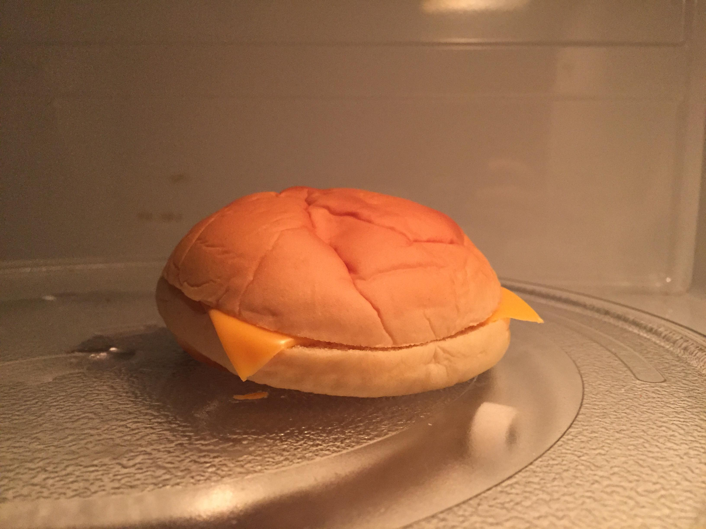

Cheese Sandwich

Description:
Feast your eyes on my go-to food since I was four probably.
This is basically a hamburger minus the burger.
Ingredients:
Steps:
- Gather your materials.
- Slap the cheese in between the buns.
- Nuke it in the microwave for 14 seconds (15 if you are a rebel).
- That's it. You're done.
Back to top
Back to homepage